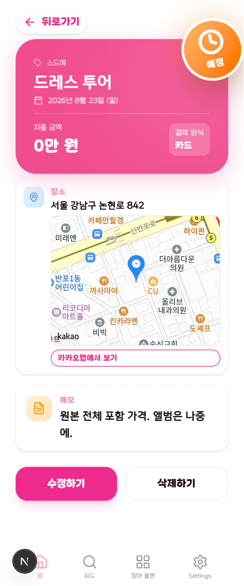

C안 · 06
일정 상세
이미 분홍 히어로가 있는 화면이라 C안과 가장 가깝습니다. 바뀌는 건 히어로가 떠 있는 카드에서 화면 머리 면이 되는 것뿐이고, 컬러 아이콘 타일은 그대로 두되, 회전 주황 스티커는 걷어냅니다.

본식 촬영
2026년 9월 12일 (토) · 오전 9:00
회전 스티커를 걷어냅니다
주황 그라데이션 원은 앱 어디에도 없는 세 번째 색이고, 회전과 글로우까지 얹혀 있어 화면에서 가장 강한 요소가 됩니다. 그런데 담고 있는 건 "아직 안 끝났다"는 정보 한 줄입니다. 정보에 조작만큼의 무게를 주면 정작 누를 것이 안 보입니다.
대신 웹(인스펙터) 변형이 이미 쓰고 있는 알약을 폰에도 씁니다 —
ScheduleDetailView L570 의 그 알약입니다. 폰만 옛 스티커를
들고 있었습니다.
완료로 바꾸는 길을 냅니다
지금 이 화면에는 상태를 바꾸는 방법이 없습니다. 보드나 홈에서만
토글할 수 있는데, 정작 "끝났나?"를 판단하는 정보(금액·장소·메모)는 전부
여기 있습니다. PATCH /plan/schedule/status/{id} 는 이미
있으니 부르는 자리만 만들면 됩니다.
하네스를 함께 고쳐야 합니다
scripts/plan-board.cjs 가 from-orange-300 /
from-green-400 클래스로 스티커를 찾습니다. 스티커를 바꾸면
이 검사도 같이 바꿔야 합니다 — 그냥 지우지 말고
상태 알약을 찾도록 옮깁니다. 검사가 지키려던 것은 스티커의 그라데이션이
아니라 "폰 변형에 상태 표시가 남아 있는가" 입니다.
isInspector 분기 자체는 그대로 둡니다.
히어로 → 면
지금은 분홍 카드가 화면 안에 떠 있고, 그 위에 흰 "뒤로가기" 알약이 또 겹쳐 있습니다. 면으로 올리면 뒤로가기가 면 안으로 들어가고 겹침이 사라집니다.
장소·메모
카드 두 장이 구분선 타일이 됩니다. 컬러 아이콘 타일(파랑 장소 · 노랑 메모)은 이 화면의 성격이라 색까지 그대로 둡니다.
완료 상태일 때
알약이 초록 체크 · 완료로 바뀌고, 면 안에 후기 올리기 진입점이 하나 붙습니다 — 피드 공급의 두 진입점 중 하나입니다.